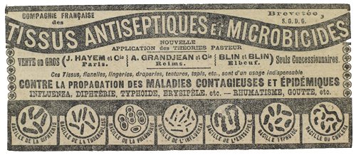

Serment dont Raoul sentait lui-même pour l’instant la prétention de la témérité. Au fond Joséphine Balsamo l’intimidait encore, et il n’était pas loin d’éprouver contre elle une certaine irritation, comme un enfant qui voudrait être l’égal et qui doit se soumettre à plus fort que lui.
Deux jours durant, il se confina dans la petite chambre qu’il occupait au rez-de-chaussée de son auberge, et dont la fenêtre donnait sur une cour plantée de pommiers. Journées de méditation et d’attente, et qu’il fit suivre d’un après-midi de promenade à travers la campagne normande, c’est-à-dire aux lieux mêmes où il était possible qu’il rencontrât Joséphine Balsamo.
Il supposait bien, en effet, que la jeune femme, toute meurtrie encore par l’horrible épreuve, ne retournerait pas à son logement de Paris. Vivante, il fallait que ceux qui l’avaient tuée, la crussent morte. Et, d’autre part, aussi bien pour se venger d’eux que pour atteindre avant eux l’objectif qu’ils s’étaient proposé, il ne fallait pas qu’elle s’éloignât du champ de bataille.
Le soir de ce troisième jour il trouva sur la table de sa chambre un bouquet de fleurs d’avril : pervenches, narcisses, primevères, coucous. Il questionna l’aubergiste. On n’avait vu personne.
« C’est elle », pensa-t-il en embrassant les fleurs qu’elle venait de cueillir.
Quatre jours consécutifs il se posta au fond de la cour, derrière une remise. Lorsqu’un pas résonnait à l’entour, son cœur battait. Déçu chaque fois, il en éprouvait une réelle douleur.
Mais le quatrième jour, à cinq heures, entre les arbres et les fourrés qui garnissaient le talus de la cour, il se produisit un froissement d’étoffe. Une robe passa. Raoul fit un mouvement pour s’élancer et, aussitôt, se contint et domina sa colère.
Il reconnaissait Clarisse d’Étigues.
Elle avait à la main un bouquet de fleurs exactement pareil à l’autre. Elle franchit légèrement l’intervalle qui la séparait du rez-de-chaussée, et, tendant le bras par la fenêtre, elle déposa la gerbe.
Lorsqu’elle revint sur ses pas, Raoul la vit de face et fut frappé de sa pâleur. Ses joues avaient perdu leurs teintes fraîches, et ses yeux cernés révélaient son chagrin et les longues heures de l’insomnie.
– Je souffrirai beaucoup pour toi, avait-elle dit, sans prévoir cependant que sa souffrance commencerait si tôt, et que le jour même où elle se donnait à Raoul serait un jour d’adieu et d’inexplicable abandon.
Il se souvint de la prédiction et, s’irritant contre elle du mal qu’il lui faisait, furieux d’être trompé dans son espoir et que la porteuse de fleurs fût Clarisse et non point celle qu’il attendait, il la laissa partir.
Pourtant, c’est à Clarisse – à Clarisse qui détruisait ainsi elle-même sa dernière chance de bonheur – qu’il dut la précieuse indication dont il avait besoin pour s’orienter dans la nuit. Une heure plus tard, il constatait qu’une lettre était attachée à la barre et, l’ayant décachetée, il lut :
« Mon chéri, est-ce fini déjà ? Non, n’est-ce pas ? Je pleure sans raison ?… Il n’est pas possible que tu en aies déjà assez de ta Clarisse ?
« Mon chéri, ce soir, ils prennent tous le train et ne seront de retour que demain très tard. Tu viendras, n’est-ce pas ? Tu ne me laisseras pas pleurer encore ?… Viens, mon chéri… »
Pauvres lignes désolées ! … Raoul n’en fut pas attendri. Il pensait au voyage annoncé et se rappelait cette accusation de Beaumagnan :
« Sachant par moi que nous devions bientôt visiter de fond en comble une propriété voisine de Dieppe, elle s’y est rendue en hâte… »
N’était-ce pas cela le but de l’expédition ? Et n’y aurait-il pas là, pour Raoul, une occasion de se mêler à la lutte et de tirer des événements tout le parti qu’ils comportaient ?
Le soir même, à sept heures, habillé comme un pêcheur de la côte, méconnaissable sous la couche d’ocre qui rougissait son visage, il montait dans le même train que le baron d’Étigues et Oscar de Bennetot, changeant comme eux deux fois, et descendant à une petite station où il coucha.
Le lendemain matin, d’Ormont, Rolleville et Roux d’Estiers venaient chercher leurs deux amis en voiture, Raoul s’élança derrière eux.
À une distance de dix kilomètres, la voiture s’arrêta en vue d’un long manoir délabré qu’on appelle le château de Gueures. S’approchant de la grille ouverte, Raoul constata que, dans le parc, grouillait tout un peuple d’ouvriers qui retournaient la terre des allées et des pelouses.
Il était dix heures. Sur le perron, les entrepreneurs reçurent les cinq associés. Raoul entra sans être remarqué, se mêla aux ouvriers, et les interrogea. Il apprit ainsi que le château de Gueures venait d’être acheté par le marquis de Rolleville et que les travaux d’aménagement avaient commencé le matin.
Raoul entendit un des entrepreneurs qui répondait au baron :
– Oui, monsieur, les instructions sont données. Ceux de mes hommes qui trouveront, en fouillant le sol, des pièces de monnaie, des objets de métal, fer, cuivre, etc. ont ordre de les apporter contre récompense.
Il était évident que tous ces bouleversements n’avaient point d’autre raison que la découverte de quelque chose. Mais la découverte de quoi ? se demandait Raoul.
Il se promena dans le parc, fit le tour du manoir, pénétra dans les caves.
À onze heures et demie, il n’avait encore abouti à aucun résultat, et la nécessité d’agir s’imposait cependant à son esprit avec une force croissante. Tout retard laissait aux autres des chances d’autant plus grandes, et il risquait de se heurter à un fait accompli.
À ce moment, le groupe des cinq amis se tenait derrière le manoir, sur une longue esplanade qui dominait le parc. Un petit mur à balustrade la bordait, marqué de place en place par douze piliers de briques qui servaient de socles à d’anciens vases de pierre, presque tous cassés.
Une équipe d’ouvriers armés de pics, se mit à démolir le mur. Raoul les regardait faire, pensivement, les mains dans ses poches, la cigarette aux lèvres, et sans se soucier que sa présence pût paraître anormale en ces lieux.
Godefroy d’Étigues roulait du tabac dans une feuille de papier. N’ayant pas d’allumettes, il s’approcha de Raoul et lui demanda du feu.
Raoul tendit sa cigarette, et, pendant que l’autre allumait la sienne, tout un plan s’échafauda en son esprit, un plan spontané, très simple, dont les moindres détails lui apparaissaient dans leur succession logique. Mais il fallait se hâter.
Raoul ôta son béret ce qui laissa échapper les mèches d’une chevelure soignée qui n’était certes pas celle d’un matelot.
Le baron d’Étigues le regarda avec attention et, subitement éclairé, fut saisi de colère.
– Encore vous ! Et déguisé ! Qu’est-ce que c’est que cette nouvelle manigance, et comment avez-vous l’audace de me relancer jusqu’ici ? Je vous ai répondu de la façon la plus catégorique, un mariage entre ma fille et vous est impossible.
Raoul lui happa le bras et, impérieusement :
– Pas de scandale ! Nous y perdrions tous les deux. Amenez-moi vos amis.
Godefroy voulut se rebiffer.
– Amenez-moi vos amis, répéta Raoul. Je viens vous rendre service. Que cherchez-vous ? Un chandelier, n’est-ce pas ?
– Oui, fit le baron, malgré lui.
– Un chandelier à sept branches, c’est bien cela. Je connais la cachette. Plus tard je vous donnerai d’autres indications qui vous seront utiles pour l’œuvre que vous poursuivez. Alors nous parlerons de mademoiselle d’Étigues. Qu’il ne soit pas question d’elle aujourd’hui… Appelez vos amis. Vite.
Godefroy hésitait, mais les promesses et les assurances de Raoul faisaient impression sur lui. Il appela ses amis qui le rejoignirent aussitôt.
– Je connais ce garçon, dit-il, et, d’après lui, on arriverait peut-être à trouver…
Raoul lui coupa la parole.
– Il n’y a pas de peut-être, monsieur. Je suis du pays. Tout gamin, je jouais dans ce château avec les enfants d’un vieux jardinier qui en était le gardien, et qui souvent nous a montré un anneau scellé au mur d’une des caves. « Il y a une cachette, là, disait-il, j’y ai vu mettre des antiquailles, flambeaux, pendules… »
Ces révélations surexcitèrent les amis de Godefroy.
Bennetot objecta rapidement :
– Les caves ? Nous les avons visitées.
– Pas bien, affirma Raoul. Je vais vous conduire.
On y arrivait par un escalier qui descendait de l’extérieur au sous-sol. Deux grandes portes ouvraient sur quelques marches, après lesquelles commençait une série de salles voûtées.
– La troisième à gauche, dit Raoul qui, au cours de ses recherches, avait étudié l’emplacement. Tenez… celle-ci…
Il les fit entrer tous les cinq dans un caveau obscur où il fallait se baisser.
– On n’y voit goutte, se plaignit Roux d’Estiers.
– En effet, dit Raoul. Mais voilà des allumettes et j’ai aperçu un bout de bougie sur les marches de l’escalier. Un instant… J’y cours.
Il referma la porte du caveau, fit tourner la clef, l’enleva, et s’éloigna en criant aux captifs :
– Allumez toujours les sept branches du chandelier. Vous le trouverez sous la dernière dalle, enveloppé soigneusement dans des toiles d’araignée…
Il n’était pas dehors qu’il entendit le bruit des coups que les cinq amis frappaient furieusement contre la porte, et il pensa que cette porte, branlante et vermoulue, ne résisterait guère plus que quelques minutes. Mais ce répit lui suffisait.